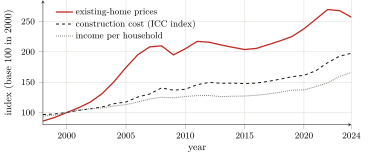

— AI translation — Claude Fable 5 (Anthropic)
Part One — A theory of rent and space · Chapter 4
4 From land to built space: location as collective product and private toll
(Social) space is a (social) product.
Henri Lefebvre, The Production of Space (Lefebvre 1974).
The three preceding chapters carried rent through to its accomplished capitalist form — but on agricultural land, the land of Ricardo and Marx, of farmers and fields. Now the subject of this book is not wheat: it is housing, the office, the warehouse — built space, where the user lives and works. The step must therefore be taken: to transfer the laws of rent from cultivated land to constructed space. This step is in no way a forced move; Marx initiated it, and the school that followed him — Lefebvre, Lipietz, Harvey — accomplished it. It reveals in passing what probably governs the whole of the first part: what fertility was to the land, situation is to urban land. But situation, unlike fertility, is not a natural quality of the soil: it is a collective product. The conditioning that chapter 1 took as a given becomes here a social fabrication — and it is this that the proprietor pockets without having made it. Such is the thesis of this chapter: urban rent is the toll levied on a value that all produce and that one alone captures.
4.1 The transfer of the laws of rent: from fertility to situation
The first step of the transposition is not ours: it is Marx’s. In chapter xlvi of Book III (“Rent of Building Land. Rent of Mines. Price of Land”), he extends the analysis of rent to urban land, and there he performs the decisive displacement: what, for agricultural land, depended on fertility now depends on the site. The rents of building land “are characterised, in the first place, by the preponderant influence that situation exerts upon them”.1 The law of differential rent then transposes term for term: where equal capitals applied to unequally fertile lands yielded unequal products, equal capitals invested on unequally situated plots yield unequal receipts; the gap turns into surplus profit, and the surplus profit into rent for the benefit of the owner of the land. The barrier of property transposes likewise: the worst-placed site is not free of rent, for one must be somewhere, and no plot is ceded for nothing so long as private property in land endures (chapter 3).
This transfer, French-language Marxist economics systematised, and the credit for it belongs to that school. It was Alain Lipietz who first raised it to its concept, in a book whose title already states our whole thesis: Le tribut foncier urbain — the urban land tribute (1974).2 There he replaces fertility and distance by a “predisposition” of the land that he names the economic and social division of space: a neighbourhood, by its transport links, its surroundings, its amenities, lends itself to a given use and valorises it — and it is this predisposition, not some virtue of the soil, that governs rent.3 Above all, he lays bare the nature of the right that makes the levy possible. It is not a productive capacity; it is “a purely political property: a map of ‘rights over’”, the right to levy a tribute on whoever intends to use the plot.4 The same school dug the furrow deeper: it showed how the developer, an intermediary agent between the land market, the financial market and the building site, transforms the surplus profit of location into rent, and why housing remains an “impossible commodity”; it traced the form of urban space back to the alliance of the state and big capital.5 It remains to establish the point that this school posits but that this book wants to place at the centre: that situation, which makes rent, is a common work.
4.2 Location is a collective product
Why is one plot worth more than another? Not because its owner has improved it — if he has, drainage or building, that is incorporated capital, a real production, whose interest is not rent (chapter 3). A plot is worth more because it is better situated: close to the centre, to transport, to jobs, to schools, to shops, to others. Now none of this is the owner’s doing. Site value is produced by the presence and activity of all — the neighbours, the passers-by, the public services, the generations that built the city. This is what Lefebvre established in a formula that has become classic: space is not a neutral container in which things would be arranged, but a social product, secreted by the overall activity of a society.6
The heart of this production is centrality. The city, Lefebvre writes, is an “œuvre” more than a product: the effect of gathering and simultaneity by which people, activities, wealth and exchanges are concentrated in one place.7 This centrality is an externality in the strict sense: no one produces it alone, and everyone contributes to it by their mere presence. A site is desirable because all the others are there; its value is the shadow cast, on one plot, by the collective work that is the city. This point displaces the thesis of chapter 1. There, the soil conditioned access, and its conditioning passed for a natural given, prior to all labour. Here, the conditioning itself — situation — is fabricated, and fabricated by the whole collectivity. The owner of urban land does not merely produce nothing: he pockets, as though he were its author, the value of a thing that all have made. That is why Lefebvre notes that, in this movement, “urban land enters into exchange value”: the common work is converted into a private title.8
4.3 … captured privately
This value produced by all, the proprietor captures in its entirety, and he captures it as a transfer, not as a production. That is David Harvey’s demonstration. From his study of Baltimore onwards, he forges the category of class-monopoly rent: the income that a class of holders — landlords, financiers — draws from a vital and scarce resource by imposing on the class of users a guaranteed “minimum return”, through the sheer play of its power and of a structured scarcity.9 Thirty years later, he gives its general formula: “all rent rests on the monopoly power of private owners over certain portions of the globe”.10 And he poses, better than anyone, the question that lies at the heart of this book. What makes the value of a place, he shows, is a “collective symbolic capital”, marks of distinction “to which everyone has contributed, today as in the past”; why, then, “let the monopoly rent attached to this symbolic capital be captured only by the multinationals or by a thin segment of the local bourgeoisie”?11 The question is exactly that of the trinity formula turned around: a third party (the owner of the land) interposes himself between the collective work and its authors in order to levy the toll on it.
The inquiry of the 1970s had established this on the most concrete terrain. At nearly equal construction cost, the same built square metre sells for far more in a fine neighbourhood than in a working-class suburb; it is this surplus profit of location, and it alone, that the owner of the land captures in the form of the price of the plot.12 The urban toll thus has its finished figure: the proprietor holds the gate of a site that all have made desirable, and charges for passage — the use value of the city, a common work, is confiscated as the exchange value of a private title.13
4.4 The proof by prices: it is location, not the building
This thesis is verified on prices, and the verification is all the more probative in that it comes from a source not suspected of Marxism. To supply it, one must first make the division that the discipline of chapter 3 imposes: in the price of a dwelling, separate what pays for a real production — the building, the work of masons, amortisable, legitimate — from what pays for the mere holding of the land. Now the second massively outweighs the first, and increasingly so. The public statistician establishes it through what he calls the “countdown” (compte à rebours): the developer sets the price he can pay for a plot by starting from the price of the dwellings in the neighbourhood and deducting his costs. So that, the statistician concludes, “it is the price of the dwellings in the neighbourhood that […] determines the price of the plots, and not the reverse”.14 The price of the land is not a cost that would enter into the price of the dwelling: it is the residual that the price of the dwelling leaves to the proprietor, once production has been paid.
The orders of magnitude confirm the division. From 2000 to 2020, the construction cost index rose by about 60 %, while the price of existing dwellings was multiplied by 2.3 to 2.7: the gap, that is to say the bulk of the rise, is attributable to the land, not to the bricks (figure).15 One can put it otherwise, and more crudely, by comparing the market price with the real economic cost of a dwelling — the building amortised, maintenance, the land counted for nothing: in Paris, housing oneself costs about five times that cost, and buying it more than double; the part in excess is nothing other than the tribute of situation.16 The pure form of this rent of situation can be read where centrality is extreme: a shop on the Champs-Élysées pays a rent that can reach several hundred times the economic cost of its premises — not because one builds differently there, but because the value of the address, produced by the whole city, is captured there in its pure state.17

Summary
At the end of this transposition, the book has reached its object: on urban land, what fertility was to the soil, situation is to built space; but situation is a system of accessibilities and externalities collectively produced (the work of the whole city) and privately captured by the owner of the land, who is in no way its author. Urban rent is therefore, like agricultural rent, a tribute and not a production: the toll levied on a common value. It is even its sharpest form, for here no one can pretend that the land “produces”: what makes the value of a site is, visibly, the presence of others.
From this finding, two threads depart, which the following parts will take up. One leads to measurement. Capitalised at the rate of interest, the rent of situation becomes a price, and the title to the land “becomes a form of fictitious capital”: an asset valued by the flow of tribute it promises, towards which surplus capital pours as into a “second circuit”.18 This is the germ of the financialisation of housing: Part III will take its measure, in euros, and will take care never to count this tribute as a production. The other thread leads to the subject. If the value of the city is produced by all and captured by one, then the dividing line is drawn: on one side the user, who pays to inhabit and to work in the place he helps to keep alive; on the other the rentier, who pockets. Lefebvre drew from this the watchword that governs the whole of Part IV — the “right to the city”, “a cry and a demand”: the right, for those who make the city, to reappropriate it.19 But it is in the next chapter that this subject must first be grounded in rigour — establishing who the user is, who the rentier is, and why they form the two poles of a single relation: there lies the conceptual keystone of the book.
(Marx 1894), chap. xlvi. The differential rent of situation, a mere second determinant in the agricultural Marx (chap. xxxix, and chapter 3 here), becomes in the city the preponderant determinant. We do not restate here the two other motifs of the same chapter xlvi — the rent of “poverty”, “a richer source than the mines of Potosí”, and the “tribute [paid] in order to be able to inhabit the earth” —: their home, because they ground the class subject, is in chapter 5.↩︎
(Lipietz 1974). Lipietz explicitly sets himself the task “of transposing to urban land the theory of rent, which Marx had developed solely for agricultural land” (Lipietz 2013). The present book therefore does not reinvent this gesture: it receives it from Lipietz, and owes him even the word tribute. Its own contribution lies elsewhere: in the long span that precedes capitalism (chapters 1 and 2), in the class subject that rent sets in opposition (chapter 5), and in the measurement of its amount (Part III).↩︎
(Lipietz 2013), summarising the “standard theory” of 1974. The economic and social division of space is the urban equivalent of fertility: a map of site values, produced by collective history and activity.↩︎
(Lipietz 2013). Lipietz knowingly borrows the word tribute from Samir Amin’s “tributary mode of production”, “since that is indeed how the feudal lord or the governor of a province proceeded” — the same filiation as that of chapters 2 and 3. The urban land tribute is not the price of a service: it is the political right to demand one.↩︎
On the developer and the capitalist production of housing, (Topalov 1974); on the theory of profit, rent and the city, (Topalov 1984); the “impossible commodity” is mobilised in chapter 5 ((Topalov 1987)). On the state and the urban question, (Lojkine 1977).↩︎
(Lefebvre 1974). “(Social) space is a (social) product”: space is neither a pre-given void nor a form imposed from outside, but the continuously produced result of social practice.↩︎
(Lefebvre 1968). The city as “œuvre” (akin to the work of art) opposed to the mere “product”; urban form defined as “the encounter, the gathering of what exists round about”. The “œuvre” belongs to use value, the “product” to exchange value: the commodification of the city subordinates the former to the latter.↩︎
(Lefebvre 1968): land speculation brings “urban land into exchange value”. It is the exact urban analogue of the primitive accumulation of chapter 2: the taking into property of what was common.↩︎
(Harvey 1974). Harvey there explicitly treats rent as “a transfer payment […] rather than an increase of value through production”: the confirmation, by another route, of the thesis of chapters 1 and 3 (rent is not a production). In Baltimore, the scarcity that makes the tribute exigible is itself fabricated by the financial institutions, which structure sub-markets and hold the top of the hierarchy.↩︎
(Harvey 2002) (The Art of Rent); our translation. Monopoly rent arises from exclusive control over a good that is “unique and non-reproducible”; its properly urban version is centrality, for which shopkeepers and hoteliers pay a premium of accessibility.↩︎
(Harvey 2002), our translation. The question is distributive and political: to whom does the rent of a value that all have produced belong? It is, transposed to space, the very question of the user and the rentier (chapter 5).↩︎
(Lipietz 2013): at the time of the inquiry, “the differences in construction prices per m² did not exceed 10 % between working-class neighbourhoods and middle-class neighbourhoods, but […] the sale prices were already far higher in the latter […] this surplus profit being captured in the form of land prices by the initial landowners”. Construction is a real production; the difference in price, at equal construction, is pure tribute of location.↩︎
A senior civil servant of French planning noted it as early as 1976: (Querrien 1976). For Max Querrien — member of the Conseil d’État, former director of architecture —, “the land […] takes on the exchange value given to it by the right to build and the rent of situation, which are, both of them, immaterial products of social activity: planning schemes, public amenities financed by taxpayers, enthusiasm and marketing”; so that “land profit is a surplus value acquired without labour” and “the landowners pocket the surplus value” produced by the collectivity.↩︎
(Friggit 2024), §4.2. This is, word for word, the price-determined rent of Ricardo and Marx (chapters 1 and 3), stated by the statistical service of the French state: the price of land is a residual, not a cost. “When an operator complains of the high price of land, he is deploring the price of the dwellings in the neighbourhood.”↩︎
INSEE construction cost index, 2000–2020; prices of existing dwellings, (Friggit 2024). Land today accounts for up to 40 % of the price of a new dwelling in the Île-de-France (Notaires du Grand Paris 2021). One reservation, which Friggit himself raises: the post-2000 surge is due above all to cheap credit (low rates, longer loans). Far from refuting the thesis, this supplies its mechanism: easy money inflates households’ purchasing capacity, and it is the price of land — the residual — that absorbs it. The rent of location is precisely what is capitalised when money is abundant.↩︎
Detailed calculations and sources in Part III (rents: OLAP, Bien’ici; prices: notaries, SeLoger; construction costs: USH). We give these ratios here only to illustrate the transposition: their systematic measurement — and the aggregate amount of the tribute — is the subject of Part III, which draws up their inventory.↩︎
Prime rents of Parisian retail: VALORIS/CBRE sources, detailed in Part III. The address produces nothing; it concentrates the value that the entire metropolis has fabricated. It is Harvey’s monopoly rent carried to its height: the non-reproducible uniqueness of a site.↩︎
(Harvey 1982), chap. 8 and 11: capitalised rent makes the land title a “fictitious capital”; the built environment forms a “second circuit” for the absorption of capital. (Lefebvre 1970) already called real estate a “second sector” into which capital flows when industry slows. On land become the financial asset of a “property state”, (Haila 2016).↩︎
(Lefebvre 1968): the right to the city as “cry and demand”, “right to a transformed and renewed urban life”. It is not a nostalgia for the old city; it is the demand that the common work return to its authors. The argument is normative: we note it here, and deploy it only in Part IV.↩︎